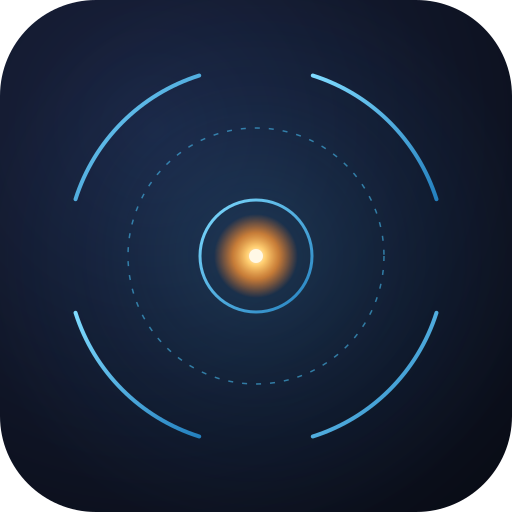
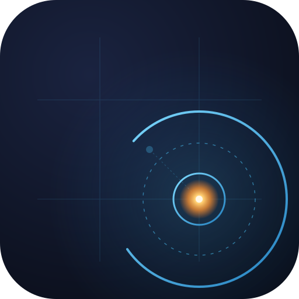
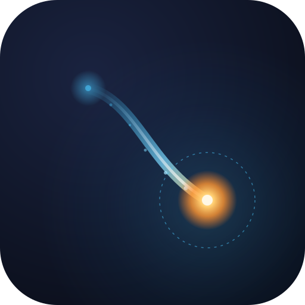
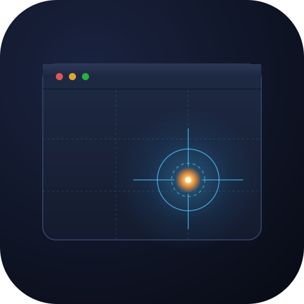
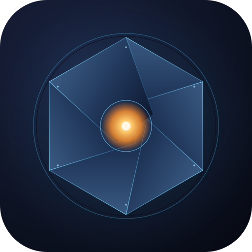

01
Reticle Lock
Centered reticle, crosshair edge-to-edge (the picker overlay, distilled), outer ring split at the cardinal points. Amber glow at the core — the moment the cursor arrives. The hero candidate: survives at 32×32 because the rings, crosshair and center dot are all independently legible.

02
Offset Target
Same reticle language as 01, but the focal point is deliberately off-center at the rule-of-thirds intersection. A ghost point lingers at center with a dashed line to the new location — the mark itself says "the point isn't fixed; you decide." The outer ring opens toward the focal, as if it swung to track.

03
Trajectory
A faint ghost dot at upper-left; a curved bezier trail that thickens and warms as it descends; a hot focal point at the landing. The motion itself is the idea: Cmd+Tab fires, the cursor arcs across, lands precisely. Sparks along the path hint at speed. Reads less as "icon" and more as "moment."

04
Window Focal
The most literal mark: a stylised macOS window (title bar + three traffic lights) with a focal point at the bottom-right rule-of-thirds intersection. A faint reticle and dashed rule-of-thirds grid orbit the point. Risk at 32×32 — the window chrome gets blurry; the focal glow still survives.

05
Aperture
Photography metaphor — a six-blade iris closing on a bright focal point. Blades gradient from lit edge down into shadow; a hot amber core glows through the opening. More "app icon" than "data viz"; reads as precision and optical focus. A cousin to the reticle, leaning sculptural instead of schematic.
